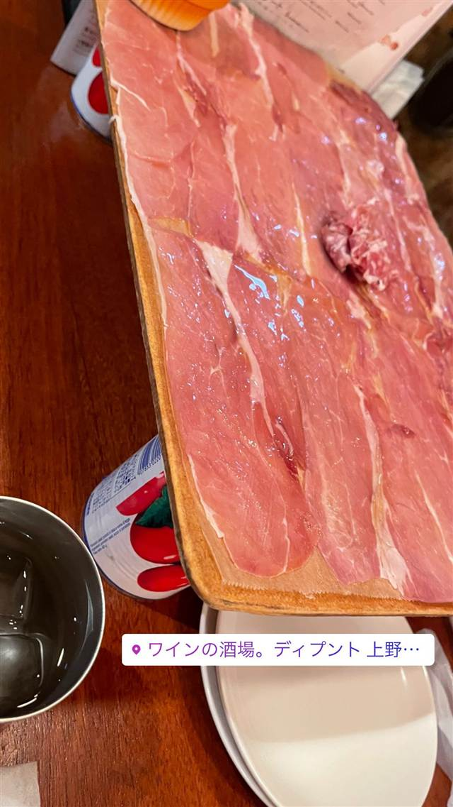
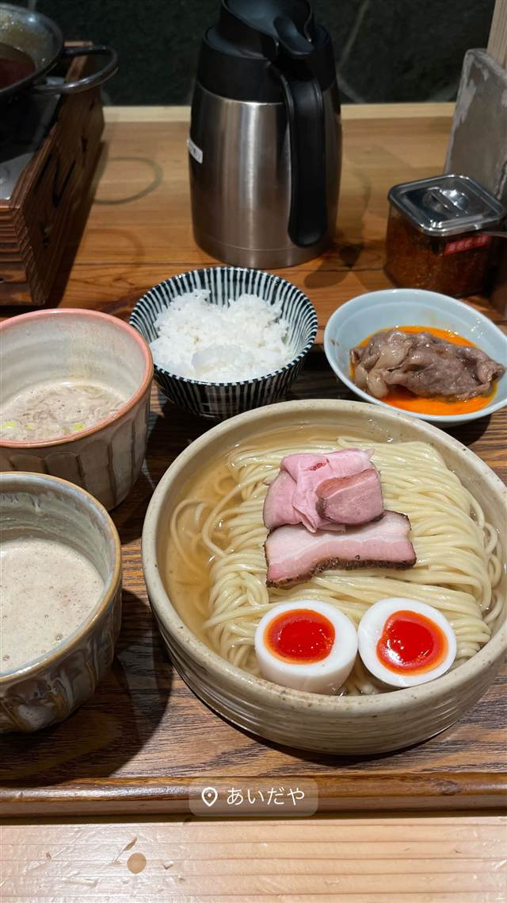

ワインの酒場。ディプント 上野御徒町店
PRONTOと同じ会社が営む、生ハム盛りとワインの店
ワインの酒場。ディプント 上野…
PRONTOでおなじみの株式会社プロントコーポレーションが手がけるワイン酒場チェーン。看板の生ハム盛りを中心に日本ワインを気軽に楽しめる店として、2012年の恵比寿1号店以来各地に展開している。
TRIVIA
豆知識
- カフェチェーン「PRONTO」と同じ会社が運営する姉妹ブランド。
- 全国に30店舗以上を展開するチェーンの一つ。
REVIEWS
世間の評判
3.15食べログ
生ハム盛りと豊富なワイン品揃え
- 看板メニューの生ハムとサラミのてんこ盛りがとても人気という声が多い
- ワインの種類が豊富で手頃な価格で飲み比べできると評価する声が多い
- ハッピーアワーはグラスワインが割引されてかなりお得という声が多い
- 満員で混み合う時間帯は背もたれ席が少なく長居しにくいという声もある
食べログ 口コミ176件
| 創業 | チェーンとしては2012年、恵比寿に1号店をオープン |
|---|---|
| 系譜 | カフェチェーン「PRONTO」を展開する株式会社プロントコーポレーションが運営するワイン酒場ブランドの1店舗。 |
| 看板 | 生ハム・サラミの盛り合わせ |
| こだわり | 生ハムをてんこ盛りにした看板皿を、豊富な日本ワイン・世界のワインと合わせて楽しむスタイル。 |
| どこから | 都心 |
| 営業時間 | 月〜金 17:00-03:00 土・日 13:00-03:00 |
| 予算 | 夜 ¥2,000～¥2,999 |
| 予約 | 予約可 |
| 場所 | 御徒町 東京都台東区上野3-21-7 福寿ビルB1F |
| メモ | JR御徒町駅南口すぐ。テーブル・個室・カウンター席あり、貸切可。 |
食べたもの：生ハム
NEARBY
近い店・同じ系統の店
-

★ つけ麺 御徒町 あいだや 1杯で2種のつけ汁を同時に味わえる小池グループの新業態のつけ麺店 昼 ¥1,000～¥1,999 夜 ¥1,000～¥1,999 -
 居酒屋 平良市街地
居酒家 でいりぐち(本店)
泡盛はすべて宮古島産の古酒、食べログ百名店に選出
夜 ¥5,000～¥5,999
居酒屋 平良市街地
居酒家 でいりぐち(本店)
泡盛はすべて宮古島産の古酒、食べログ百名店に選出
夜 ¥5,000～¥5,999
-
 居酒屋 大崎広小路
酒場それがし
添加物を使わない純米酒だけを扱う日本酒専門の酒場
夜 ¥4,000～¥4,999
居酒屋 大崎広小路
酒場それがし
添加物を使わない純米酒だけを扱う日本酒専門の酒場
夜 ¥4,000～¥4,999
-
 居酒屋 中目黒
つなぎや 中目黒
前沢産牛の牛タンを炙り・煮込み・アヒージョで味わう
夜 ¥6,000～¥7,999
居酒屋 中目黒
つなぎや 中目黒
前沢産牛の牛タンを炙り・煮込み・アヒージョで味わう
夜 ¥6,000～¥7,999
-
 居酒屋 鶯谷駅
大衆鳥酒場 鳥椿 鶯谷朝顔通り店
サイコロの出目で値段が変わるチンチロリンハイボール
昼 ¥2,000～¥2,999 夜 ¥3,000～¥3,999
居酒屋 鶯谷駅
大衆鳥酒場 鳥椿 鶯谷朝顔通り店
サイコロの出目で値段が変わるチンチロリンハイボール
昼 ¥2,000～¥2,999 夜 ¥3,000～¥3,999
-
 居酒屋 恵比寿駅
酒場シナトラ 恵比寿店
銅製の大鍋で仕込むたまり醤油ベースの名物肉豆腐
夜 ¥5,000～¥5,999
居酒屋 恵比寿駅
酒場シナトラ 恵比寿店
銅製の大鍋で仕込むたまり醤油ベースの名物肉豆腐
夜 ¥5,000～¥5,999